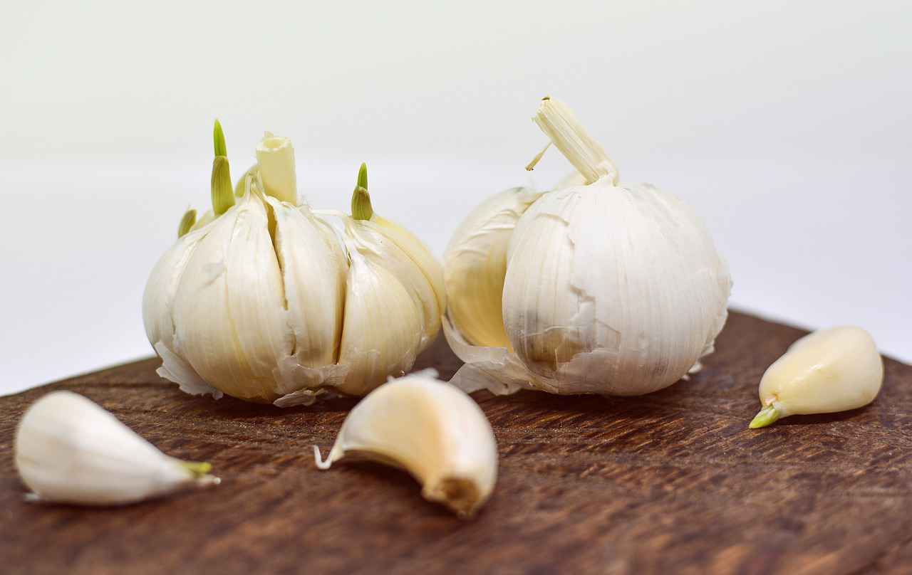

Un début de rhume, une digestion difficile, une toux fatigante…. Redécouvrez les vertus des plantes (non traitées) de votre jardin pour soigner naturellement les petits “bobos” de l’hiver.
NB : Infusion = verser dessus de l’eau bouillante et hors du feux laisser infuser 10 minutes avant de filtrer. Décoction (sur les racines par exemple) = verser dans l’eau froide et faites bouillir 10 minutes avant de filtrer. Sauf indication contraire, les recettes sont données pour 1 litre d’eau.
AIL

BOURRACHE
Les insectes en raffolent. Nous aussi, dans les salades (les fleurs ont un petit goût d'huître ; en plus elles calment la toux car elles sont adoucissantes). Sinon elle stimule la production de sueur et d’urine. Une infusion de 30 g de fleurs a de nombreux usage mais ils varient selon la dose journalière :
CASSIS
CHOU
Il excelle pour les problèmes de gorge, une toux rebelle, un enrouement...
CITRON
Le citron est antiseptique et bactéricide, diurétique, astringent, vermifuge, tonique, hépatique, anti-névralgique et antirhumatismal.
COQUELICOT
Cousin du pavot, c’est une plante calmante, utile contre l’insomnie, la nervosité, l’anxiété, et les maladies du système respiratoire.

CRESSON
Ses effets dépuratifs sont bien connus donc le manger cru est une bonne habitude.
FENOUIL
Il favorise le transit intestinal et l’évacuation des gaz.
LAITUE
Le suc des laitues contient une substance calmante, légèrement sédative, c’est pourquoi il est recommandé d’en manger le soir. Mais d’autres usages sont possibles :
LAVANDE
Comme beaucoup de plantes aromatiques, la lavande facilite la digestion, stimule le foie, aide à l’expulsion des gaz, favorise la sécrétion d’urine ; c’est aussi un bon antiseptique avec de réelles propriétés cicatrisantes. Elle est également calmante, efficace contre les troubles du sommeil, et elle repousse certains insectes. En fonction de la concentration, les actions de l’infusion sont différentes :

LIERRE terrestre
Cette plante est très bonne contre la constipation. C’est également un bon stimulant de la sécrétion de la bile par le foie facilitant ainsi la digestion des matières grasses.
MARJOLAINE
Elle est considérée comme antispasmodique, expectorante, antiseptique, stomachique, donc contre les affections du foie d’origine nerveuse, l’aérophagie, les spasmes intestinaux, l’insomnie, l’asthme, la toux, les règles douloureuses, les rhumatismes…
MÉLISSE (citronnelle)
Cette plante est calmante, antispasmodique, digestive et calmante.
MENTHE
Menthe poivré, chocolat, marocaine…. je vous conseille de réaliser les recettes ci-dessous en variant les types de plantes (et donc de goûts!) :
Attention : à éviter si vous prenez de l’homéopathie, et à éviter en cas de maladie du foie
MIEL
C’est vrai, ce n’est pas un légume du jardin, mais il est indispensable pour soigner les bobos de l’hiver, et notamment les petites gerçures. Dans un verre mélangez ½ cuillère à café d’huile de macadamia et ½ cuillère à café de miel liquide. Appliquez en massant pendant 5 minutes. Et renouveler.
Contre les lèvres gercées vous pouvez utiliser ce baume en couche épaisse (après quelques minutes, retirez l’excédent, mais ne rincez pas) : 1 cuillère à café de miel avec 1 cuillère à café de crème fraiche.
NAVET
Une bonne soupe en hiver ? C’est un remède idéal en cas d’irritation pulmonaire (rhume, toux, asthme…). De plus, riche en fibres, il nettoie l’intestin.
OIGNON
Le bulbe apporte des molécules prébiotiques qui favorisent les bactéries intestinales (pour une flore en pleine forme !), mais également antiseptiques et antibiotiques (très utiles pour prévenir les états grippaux).
La cuisson détruit une partie de ses principes actifs liés à une huile volatile, donc le plus simple est de le consommer cru (avant ingestion vous pouvez également en respirer cette huile volatile si efficace !).
Alternative : coupez 300 g d’oignons, ajoutez 100 g de miel, ½ litre de vin blanc ; laissez macérer 48h, et filtrer ; en boire 2 tasses par jour.
Pour profiter de son action émolliente et pectorale (contre la toux grasse et la bronchite), faire bouillir 3 oignons dans pendant 5 minutes dans 1 litre d’eau ; à boire avec du miel. Ou en baume : hachez un oignon et mélanger à 100g d’huile de coco mises à chauffer doucement (le baume s’applique à froid). Ou en sirop : couper l’oignon en fines lamelles et disposez une couche sur une assiette ; recouvrez de sucre de canne roux ; recouvrez d’oignons ; à nouveau du sucre… Laissez reposer toute la nuit et le lendemain vous pourrez récupérer ce sirop dan un flacon. En boire 1 cuillère à café 3 fois par jour.

ORANGE
De manière étonnante les feuilles ont un pouvoir sédatif, mais également antispasmodique, sudorifique. Donc contre les palpitations et insomnies : 4 feuilles à infuser dans 1 tasse d’eau bouillante pendant 10 minutes.
ORTIE
En hiver il est fréquent de ressentir une fatigue physique plus importante que la normale. Si vous avez pensé à faire sécher des feuilles d’ortie, vous pourrez profiter de ses vertus antianémique (car riche e silice de fer). Pour se faire, versez 1 cuillère à soupe de feuilles dans 25 cl d’eau. Faites bouillir et infuser 10 min. Filtrez et buvez 1 à 2 tasses par jour pendant 3 semaines.
PISSENLIT
La fleur jaune est très jolie, mais pour en profiter comme salade (pour stimuler la production d’urine, le foie et la vésicule biliaire, ouvrir l’appétit et aider à la digestion) il faut couper les feuilles avant l'apparition du bouton floral.
POMME
Les anglais disent “one apple a day keep the doctor away”. Elle est prescrite en cas de constipation, infections intestinales, goutte, rhumatismes, anémie, surmenage, déminéralisation, insuffisance hépatique, cholestérol, infarctus, insomnie, la toux ou l’enrouement (plutôt cuite)… mais à utiliser bio pour garder les bienfaits de sa peau. Le vinaigre de cidre (sur les salades) est une alternative contre la fatigue, l'hypertension.
PRUNEAU
C’est bien connu, le pruneau régule le trafic intestinal. Voici une recette pour en redécouvrir les bienfaits : les fendre et les faire cuire 2 heures en changeant l’eau 2 fois ; à 30 minutes avant la fin, ajouter de la cannelle ; à ingérer (en quantité raisonnable) le matin à jeun avec un peu de jus de citron (et éventuellement de miel).
RADIS
Ses propriétés diffèrent selon sa couleur.
Le noir :
Le raifort : contre l’asthme et les engorgements des voies respiratoires : faire infuser 25 g de racines ; boire 2 à 3 tasses par jour.
ROMARIN
Ayez le réflexe de faire sécher des branches afin de pouvoir l’utiliser toute l’année ; cela redonne relèvera tous vos plats, et c’est une excellente tisane. Il est anti rhumatismal, anti névralgique, antiseptique, stimulant général, cardiotonique (contre les palpitations), il agit sur la bile (l’augmente et l'éclaircit), il augmente la sécrétion d’urine ; il est recommandé dans les affections grippales et pulmonaires, le surmenage, l’anémie, les ballonnements, les gaz, les calculs biliaires, les règles douloureuses, les vertiges, les syncopes, les migraines nerveuses...
SAUGE
Parfaite pour faciliter la digestion, c’est aussi un tonique qui stimule le système nerveux vagomoteur, active la circulation. Difficile de lister toutes ses propriétés (mais à éviter pour les femmes qui allaitent).
SARRIETTE
Remarquable pour la digestion, elle agit sur l’estomac et l’intestin.
SOUCIS DES JARDINS (ou Calendula)
Redécouvrez ses bienfaits : contre la grippe, la fièvre, les douleurs rhumatismales, les gastrites, l’insuffisance biliaire … faire infuser 40 g de fleurs (fraîches ou séchées).
SUREAU
C’est un arbre courant dont l’utilisation est multiple.
TILLEUL
Le tilleul favorise la transpiration, ce qui permet de faire naturellement baisser la fièvre. Versez 1 cuillère à soupe de sommités fleuries séchées ; recouvrez d’eau frémissante et laissez infuser 15 minutes. Boire 3 tasses par jour (idéalement en dehors des repas).
THYM
Autre star du jardin, le thym contient une essence, le thymol, antiseptique très puissant, un stimulant des fonctions respiratoires, digestives et circulatoire ; il est également vermifuge, antispasmodique, diurétique, il diminue les gaz et les ballonnements, lutte contre les troubles hépatiques et urinaires, stimule l’appétit et combat la faiblesse cardiaque … donc, en prévention, dépêchez-vous de faire infuser 15 g de sommités fleuries, fraîches ou séchées !
Pour calmer la toux sèche, mettez 2 cuillères à café de sommités fleuries ; recouvrez d’eau frémissante et laissez infuser 15 minutes ; ajoutez 1 cuillère à café de miel de thym ; en boire 3 tasses par jour.
Pour soigner une angine, préparez une infusion en versant 20 cl d’eau frémissante sur 1 cuillère à café de thym séché ; laissez infuser 15 min puis filtrez ; gargarisez vous 3 à 5 fois par jour.
Contre le rhume, voici une préparation d’inhalation très efficace : dans 25 cl d’eau froide, laissez macérer 1 cuillère à soupe de sommités fleuries de thym avec 1 cuillère à soupe de fleurs de lavande, 1 cuillère à café de feuilles d’eucalyptus ; portez à ébullition et inspirez les vapeurs (idéalement sous une serviette pendant 15 minutes). NB : évitez de sortir après une inhalation !
VERVEINE
VIOLETTE ODORANTE
Important : si les symptômes persistent il est important d’aller voir un médecin !
Tous les articles
-
s'y mettre
-
soins de l'hiver
-
soins de l'été 2
-
soins de l'été 1
-
En février
-
Lunaison
-
Rentrée
-
l'été
-
intemporel